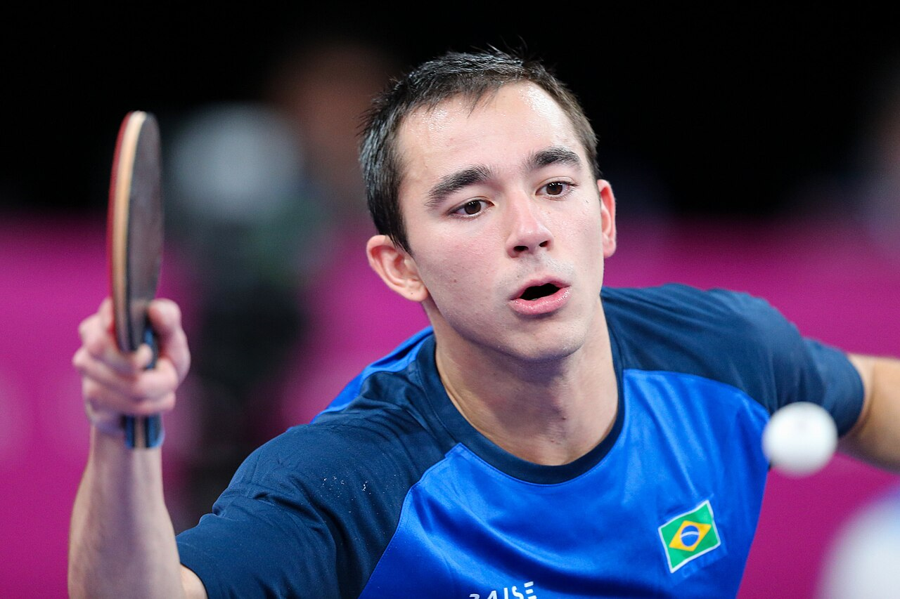

Hugo Calderano esteve muito perto de alcançar mais uma final importante no tênis de mesa mundial, mas acabou eliminado na semifinal do China Smash 2026. Na madrugada deste domingo, 11 de outubro, pelo horário de Brasília, o brasileiro perdeu para o taiwanês Lin Yun-Ju por 4 sets a 3, em um confronto emocionante disputado em Pequim, na China.
O resultado foi especialmente doloroso pela maneira como a partida se desenvolveu. Calderano começou melhor, abriu vantagem de 2 sets a 0 e parecia encaminhar a classificação. Entretanto, o adversário reagiu, venceu três parciais consecutivas e virou o confronto. O brasileiro ainda conseguiu empatar em 3 a 3, mas foi superado no sétimo set.
Apesar da eliminação, Calderano encerrou o China Smash com quatro vitórias na chave individual masculina, incluindo um triunfo expressivo sobre o francês Félix Lebrun, então segundo colocado do ranking mundial. A campanha colocou o brasileiro entre os semifinalistas de uma das competições mais importantes do circuito World Table Tennis (WTT).
Como foi a derrota
A semifinal começou com o brasileiro em vantagem. Calderano venceu os dois primeiros sets por 11 a 9, construindo uma situação favorável diante de um adversário que ocupava a sexta posição do ranking mundial.
A reação de Lin Yun-Ju começou no terceiro set. O taiwanês venceu por 11 a 8 e repetiu o placar na quarta parcial, igualando o confronto em 2 a 2.
No quinto set, Lin ampliou seu domínio e venceu por 11 a 4. Pela primeira vez na partida, Calderano ficou atrás no placar geral e passou a precisar de uma reação para continuar disputando a classificação.
O brasileiro respondeu de maneira contundente. Na sexta parcial, dominou o adversário e venceu por 11 a 3, levando a semifinal ao sétimo set.
Na parcial decisiva, Lin Yun-Ju começou abrindo 3 a 0. Calderano pediu tempo para tentar interromper a sequência, mas o taiwanês manteve a vantagem e fechou em 11 a 5.
Com isso, Lin Yun-Ju venceu por 4 sets a 3 e avançou à final do China Smash 2026.
A campanha completa de Hugo Calderano
Antes da eliminação na semifinal, o brasileiro havia construído uma sequência de quatro vitórias na chave principal do torneio.
A estreia aconteceu diante do alemão Dimitrij Ovtcharov, superado por 3 sets a 0, com parciais de 11/9, 11/9 e 11/8.
Na segunda rodada, enfrentou An Jaehyun, da Coreia do Sul, e novamente venceu sem perder sets. As parciais foram de 11/5, 11/9 e 12/10.
Nas oitavas de final, Calderano manteve a sequência de vitórias por 3 a 0 ao superar o alemão Patrick Franziska, com parciais de 11/2, 11/5 e 11/7.
O confronto mais expressivo da campanha aconteceu nas quartas de final. Diante de Félix Lebrun, número dois do mundo, o brasileiro perdeu o primeiro set, mas reagiu para vencer por 4 a 1.
A vitória sobre Lebrun teve parciais de 9/11, 11/9, 12/10, 12/10 e 11/9. O resultado garantiu a classificação para a semifinal e representou uma importante recuperação diante de um rival que havia vencido os três confrontos anteriores entre os dois.
A revanche contra Félix Lebrun marcou a campanha
Nos Jogos Olímpicos de Paris 2024, o francês derrotou Calderano na disputa pela medalha de bronze do individual masculino. Desde então, os dois voltaram a protagonizar confrontos importantes no circuito internacional.
Na edição de 2026 do China Smash, Calderano conseguiu superar o francês justamente em uma fase decisiva.
O brasileiro chegou às quartas de final sem perder nenhum set nas três partidas anteriores. Contra Lebrun, precisou lidar com a desvantagem inicial e encontrou uma maneira de virar o confronto.
A vitória colocou Calderano novamente em uma semifinal de alto nível, mas a oportunidade de alcançar a decisão terminou diante de Lin Yun-Ju.
Quem é Lin Yun-Ju que eliminou Calderano
O representante de Taiwan, chegou à semifinal do China Smash como sexto colocado do ranking mundial, uma posição acima de Hugo Calderano.
O taiwanês também vinha de uma vitória importante nas quartas de final, quando derrotou o sueco Truls Moregard, então quinto colocado do mundo, por 4 sets a 0.
O histórico entre Lin e Calderano já era desfavorável ao brasileiro antes do encontro em Pequim.
Nos cinco confrontos anteriores registrados no retrospecto antes da semifinal, Lin havia conquistado quatro vitórias. A única vitória brasileira aconteceu no Aberto da República Tcheca, em 2017.
A semifinal do China Smash ampliou a vantagem do taiwanês nesse confronto direto e encerrou a busca pelo título em Pequim.
O que representa a campanha de Calderano
O China Smash integra a categoria Grand Smash da World Table Tennis, que reúne algumas das competições de maior prestígio do tênis de mesa internacional.
O torneio oferece até 2.000 pontos no ranking mundial ao campeão da chave individual, o que torna cada edição importante para os principais atletas do circuito.
Calderano chegou à competição ocupando a sétima posição do ranking mundial e enfrentou adversários de alto nível durante sua campanha.
A classificação para a semifinal também veio poucas semanas depois de outro resultado expressivo do brasileiro na Ásia.
Em setembro, Calderano havia alcançado a final do WTT Champions Macau 2026. Na decisão, foi derrotado pelo sueco Truls Moregard por 4 sets a 1, encerrando o torneio como vice-campeão.
O desempenho em Macau e a presença entre os quatro semifinalistas do China Smash mostram a capacidade do brasileiro de avançar às fases decisivas de eventos importantes do circuito.
Embora a eliminação diante de Lin Yun-Ju tenha interrompido a possibilidade de conquistar o título na China, a campanha teve um resultado especialmente relevante: a vitória sobre Félix Lebrun, um dos principais nomes da modalidade.
Próximas competições de tênis de mesa em 2026
Apesar da eliminação na semifinal do China Smash, Hugo Calderano ainda tem compromissos importantes pela frente em 2026. O brasileiro aparece na convocação da seleção para o Campeonato Pan-Americano, marcado para 18 a 25 de outubro, em Lima, no Peru.
A Confederação Brasileira de Tênis de Mesa (CBTM) divulgou a convocação da equipe nacional, que também conta com Bruna Takahashi, Giulia Takahashi, Laura Watanabe, Victoria Strassburger, Leonardo Iizuka, Guilherme Teodoro e Felipe Arado. A presença de Calderano na lista oficial está confirmada, mas sua participação efetiva na competição ainda depende da confirmação final.
O Campeonato Pan-Americano será disputado no Polideportivo 3, na Villa Deportiva Nacional (VIDENA), em Lima. As disputas por equipes estão programadas para ocorrer entre 18 e 21 de outubro, enquanto as provas individuais e de duplas acontecerão de 22 a 25 de outubro.
A competição também tem importância classificatória, pois integra o processo de definição das vagas para o Campeonato Mundial Individual de 2027.
Além do Pan-Americano, o calendário internacional ainda reserva torneios de alto nível no circuito WTT e competições organizadas pela Federação Internacional de Tênis de Mesa (ITTF).
Principais competições restantes em 2026
- Campeonato Pan-Americano — 18 a 25 de outubro, Lima, Peru. Hugo Calderano integra a convocação brasileira para o torneio continental.
- WTT Champions Montpellier — 27 de outubro a 1º de novembro, França. Competição de elite do circuito internacional, com 32 atletas por chave individual. A participação definitiva de Calderano ainda não foi confirmada.
- WTT Champions Frankfurt — 3 a 8 de novembro, Alemanha. Outro torneio importante da reta final da temporada, reunindo jogadores da elite mundial.
- WTT Star Contender Muscat — 16 a 21 de novembro, Omã. Etapa relevante do circuito internacional, embora abaixo da categoria Champions. A participação de Calderano ainda não foi verificada.
- Copa do Mundo por Equipes Mistas — 29 de novembro a 6 de dezembro, Chengdu, China. Competição organizada pela ITTF, com disputas masculinas, femininas e de duplas mistas no formato coletivo. A presença do Brasil na edição de 2026 ainda não foi confirmada.
- WTT Finals Hong Kong — dezembro, Hong Kong. O torneio reúne os principais classificados da temporada e representa o encerramento do circuito WTT. O calendário da ITTF indica o período de 8 a 13 de dezembro. A participação de Calderano dependerá da lista definitiva de classificados.
Entre esses compromissos, os torneios WTT Champions de Montpellier e Frankfurt representam oportunidades importantes para os principais nomes do circuito continuarem competindo em alto nível antes do encerramento da temporada.
O WTT Finals, por sua vez, tem um significado especial por reunir os atletas mais bem classificados do circuito. A competição encerra o calendário de elite e funciona como uma das principais vitrines do tênis de mesa mundial.
Para Calderano, o compromisso mais próximo indicado oficialmente é o Campeonato Pan-Americano. A possível presença nas etapas seguintes do WTT ainda exige confirmação das listas definitivas de participantes.
O cenário mantém o tênis de mesa brasileiro em evidência na reta final do ano, depois de uma temporada na qual Calderano voltou a alcançar fases decisivas de grandes competições internacionais.
Calderano deixa Pequim com quatro vitórias e uma derrota na chave individual, depois de uma semifinal decidida somente no sétimo set.
O brasileiro não conseguiu chegar à decisão, mas encerrou o China Smash 2026 após superar adversários de diferentes escolas do tênis de mesa e desafiar até o último set um jogador situado acima dele no ranking mundial.
A derrota por 4 sets a 3 marcou o fim da participação em Pequim. A campanha, por sua vez, acrescenta mais uma semifinal internacional ao percurso de Hugo Calderano na temporada de 2026.